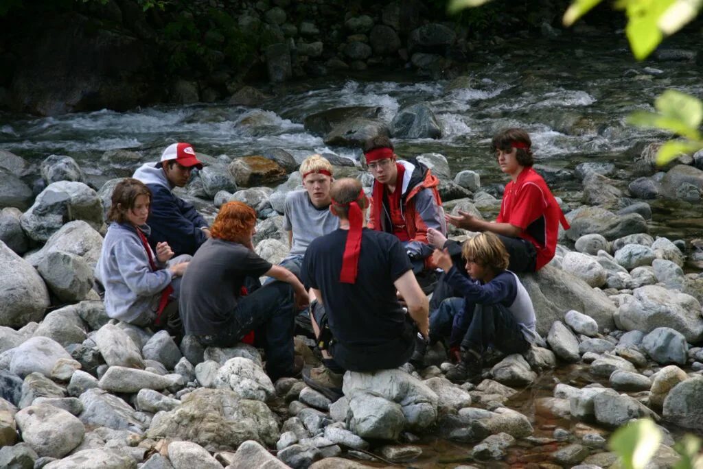
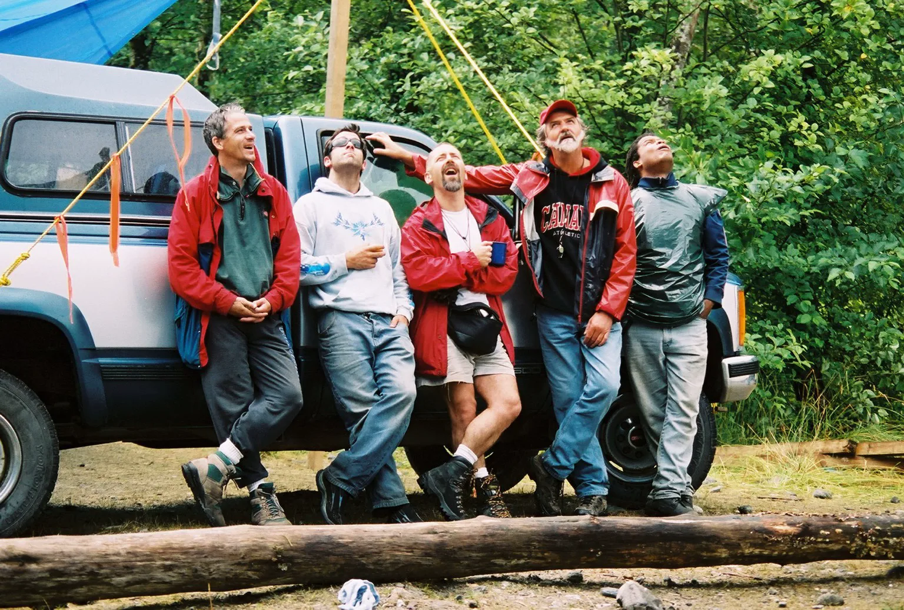
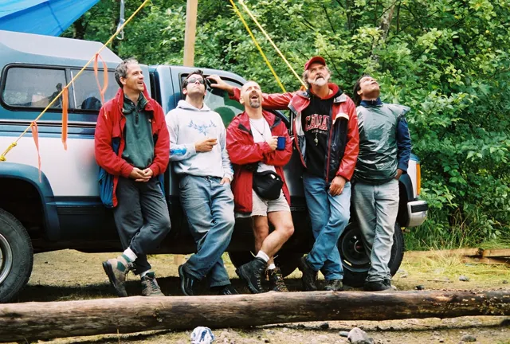
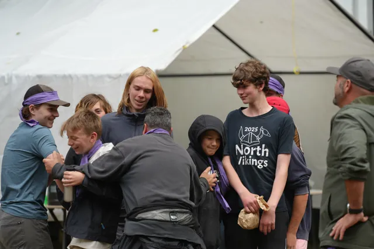

Since 1990
One weekend, handed from the men who built it in 1990 to the men who will run it this September.
It began as a conversation among volunteer men about the hard passage from adolescence to manhood. More than thirty-five years on it is still built, cooked, carried and held by volunteer men, who pay the same $320 as the young men.
- Since 1990Volunteer men. Nobody is paid.
- Sept 11–13, 2026Squamish region, BC
- Ages 12–17Phone-free. Non-denominational.
- $320Per person. Everyone pays the same.
How it began
It started with a group of men who decided to do something.
The 2011 Production Manual, drawn from "the combined experience of countless men over 20 years", tells the founding in one paragraph signed by co-founder and vision holder Brad Leslie:
"A group of men were discussing the plight of today's male teenagers… Deciding they wanted to do something about it, this group of volunteer men created the Young Men's Adventure Weekend as a wilderness experience where Young Men could spend time with adult men… men who are committed to holding high personal standards and being accountable in the community and in their own lives."
From the 2011 Production Manual, "How it all began"Brad's son Dorian puts it more plainly: "My dad, Brad Leslie, loves to make a difference in the world, supporting men and young men to be their best and live lives of integrity and service, and hold high standards for themselves and their communities."

What has not changed
The purpose was written down early, and it still reads the same.
The Society's Context–Purpose–Results statement, written in 2023 and repeated word for word in the 2026 overview for parents and staff:
"The Young Men's Adventure Weekend provides the environment, community, and circumstances for young men to challenge themselves, push their limits, and build the confidence that is required to stay true to themselves while facing the challenges of life today."
From the Context–Purpose–Results statement, 2023Its four values, Responsibility, Integrity, Community and Self-discovery, are the same four words in the same order on Why YMAW, in the 2023 statement and in the 2026 overview.
- Results, 2011
- "The Young Men show courage in the face of challenges and adversity… The men and the Young Men leave the event as equals, friends and brothers."
- Results, 2026
- "Young men will return home, happier, more confident, and better prepared to face the challenges of their lives."
The shape of the weekend, then and now
A young man walking in this September would recognize the 2011 schedule.
The manual's sample schedule and this September's weekend share the same bones. The manual's words on the left.


- Friday walk-in
- "Arrive at site and hike in. Its physical work, usually in the dark… should feel a little nervy."
- The bus from Burnaby, Langley or Squamish, then the hike in with his own gear. Still in the dark.
- Teams
- "Line up by height… Teams are formed and a leader is picked."
- Sized up once, in the open, then set aside. Each new team picks its own leader.
- Camp build
- "That new team heads off to build a shelter together. This is a first opportunity for leadership to show up."
- Teams still build the shelters they sleep in.
- Saturday quests
- "A series of six or seven stations… less entertainment and more leadership training." Every quest had to include trust, leadership, strength, problem solving, teamwork and facing fear.
- Quest Stations built by the production team: strength, nerve, problem-solving and trust, none of them finishable alone.
- The circle
- Saturday night was already called The Push. The sequence begins: "A fire is lit."
- Still The Push, still around a fire. The men speak first, no one is made to speak, and what is said there stays there.
- Sunday
- Future Plans, a young-men-versus-men game, then the young men "walk through two lines of the production men… eye to eye".
- A ceremony, Future Plans in his own hand, the ball game against the men, the walk out between two lines of men. Then the bus home.
- The calendar
- "YMAWs are typically held in mid-July."
- September 11–13, 2026, Squamish region.
- The fee
- $125 "per young man and production man".
- $320 per person, men included. Assistance available.
Voices
From the letters, invitations and scripts. Never from the circle.
Written to invite families and to open a circle. Nothing spoken in a circle is repeated here.
"A man isn't built in front of a crowd. He's built in the quiet, when no one is watching."
From The Man You'll Meet, a circle script
"When you drink from the well, remember the men who dug it. All of us are here because another man showed up."
From The Man You'll Meet, "The Well"
"Our goal with the weekend is to encourage challenge, leadership development, teamwork, and provide some good role models to educate the young men."
From the 2018 letter to friends
"It's a place to challenge yourself, and make new friends that last a lifetime."
From the 2018 Men's Conversation Package, on what to tell a young man
"We know that raising a resilient, capable young man is a profound responsibility, and we believe that no family should have to do it entirely alone."
From the 2026 letter to friends and family
"It is part summer camp, part rite of passage, and a powerful stepping stone into young adulthood."
From the 2026 letter to friends and family
Carry it forward
The well was dug by men who showed up. It needs digging again this September.
To the men
The 2011 manual is blunt: "Producing a YMAW is your chance to make a difference, reconnect with the values that make men strong and purposeful and to help Young Men who need positive role models to give them the gifts that our fathers gave to us." The 2026 overview ends: "We need men like you on our team."
Every man is screened, every first-timer shadows before he leads, and production men pay the same $320. Roles are on The Team; the form is the same one the young men use.
To families
The 2026 letter asks it directly: "If you have a son, or know a young man who could benefit from this experience, I strongly encourage you to consider this year's weekend."
September 11–13, 2026, Squamish region. Phone-free, non-denominational, $320 with assistance available, young men of every background welcome. Register him, or write to info@ymaw.com.
Since 1990, the men have gone first.
September 11–13, 2026, Squamish region. $320 per person, everyone pays the same. Assistance available.